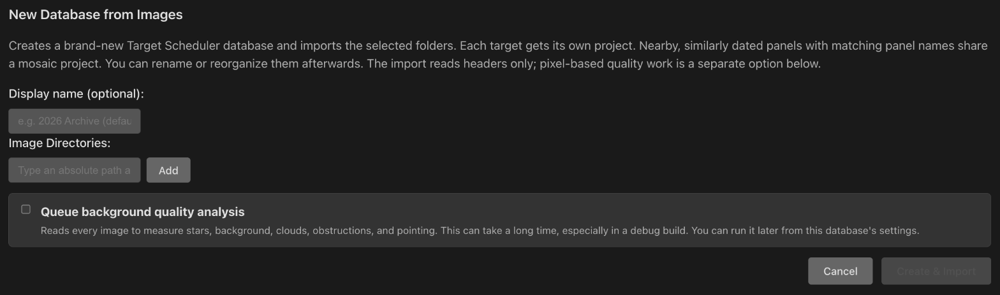
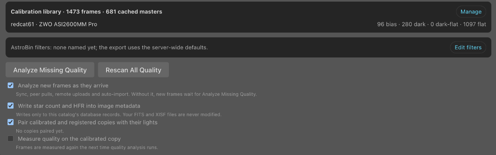
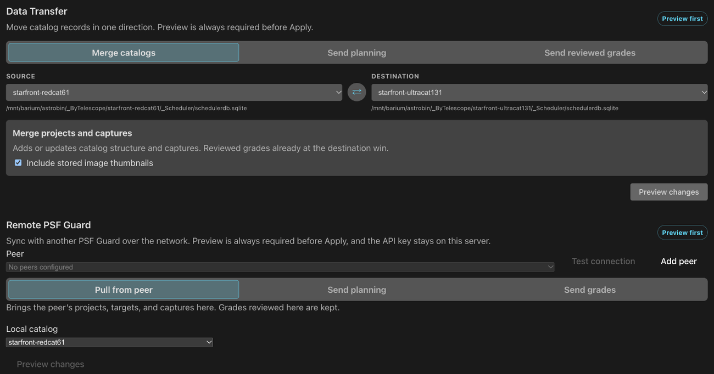

Import Images
Build a Target Scheduler-compatible catalog from FITS or XISF folders, add new frames by hand or on a schedule, and fill in quality measurements in the background.
The importer reads headers first and leaves pixel work for later.
Create a catalog from images
The desktop app always allows database changes. A web server needs them turned on, bound to a trusted interface:
psf-guard server --host 127.0.0.1 --allow-database-managementOn any other address the server refuses to start until a user account exists. See Server Accounts.
- Open Settings → Databases → New Database from Images.
- Enter a name and one or more absolute folder paths. A bad path stays in the form, named in the error.
- Leave Queue background quality analysis off for a quick first import.
- Choose Create & Import. Progress survives closing or reloading the page.

The UI saves the SQLite file under databases/ beside the registry and
shows its path on the database card. An empty folder is fine for a catalog that will
receive N.I.N.A. plugin syncs. The CLI writes the file where you say:
psf-guard create-db ./archive.sqlite /data/lights /data/more-lights --name "Archive"--dry-run previews without writing; --no-register keeps the
file out of the registry. See CLI Reference.
What counts as a frame
A scan reads .fits, .fit, .fts and
.xisf in any letter case and leaves sidecar files alone. Monolithic XISF
from PixInsight carries the same keywords, so it groups, grades, previews and stacks
like FITS. An XISF frame that declares bounds="0:1" is read onto a 16-bit
scale, so its background and star flux compare with camera frames. The file is never
changed.
FITS images kept in an extension, tile-compressed (fpack), signed 16-bit and 64-bit
integer images open too. Blank pixels read as missing, and HIERARCH keywords
are kept.
What the header import builds
The catalog uses the full Target Scheduler schema, so PSF Guard can open a real Target Scheduler database the same way. Target Scheduler itself is optional. Lights start as Pending. From their headers PSF Guard builds:
- Targets from
OBJECTnames, one project each by default, across any number of nights. A different telescope, camera, focal length or binning never shares a project. - Mosaic projects only when panel names share a root, centers lie within five degrees, and dates fall within 14 days.
- Coordinates from the median header position. Target Scheduler stores RA in decimal hours and Dec in degrees.
- Exposure templates from filter, gain, offset, binning and readout mode, with the most common exposure as default.
- Exposure plans per template and exposure length, with desired and acquired counts seeded from the frames.
Bias, dark, dark-flat and flat frames go to PSF Guard's own calibration tables in
the same file, never to acquiredimage. Twilight flats count as flats.
See Calibration Libraries.
OBJECT against
the pixels. The quality scan adds star measurements, photometry, spatial screening
and fresh pointing checks later.
Add new frames
Click Import on a database card. A dry preview lists frames that attach to existing targets and frames that start new projects. Set the scope, choose Update preview, then confirm.
- Import: lights and calibration (default), lights only, or calibration only.
- Folders: each image root and two levels below it. Tick one night's folder to import just that night.
- Skip processing artifacts: leave out integration masters. Off by default.
- Include frames from other rigs: off by default. A catalog learns its telescope and camera from the frames it holds; a light from another telescope is listed by rig with an example file and left out, since it is far more often a filing mistake. Turn this on after a real equipment change.
A basename the catalog holds is skipped. A new light joins a target with the same
OBJECT name, else one within 0.5°, else starts a new project and target.
Calibration frames are matched by path and file fingerprint.
psf-guard import archive ./new-frames --dry-run
psf-guard import archive ./new-frames
psf-guard import archive ./new-flats --calibration-only
psf-guard import archive ./processing-tree --skip-processed
psf-guard import archive ./new-camera --accept-other-rigs--no-attach makes every new frame start its own structure.
Calibrated and registered copies
A calibrated or registered copy that WBPP, Siril, ASTAP, DeepSkyStacker or another tool wrote is paired with the light it came from, matched by capture time, exposure, filter, target and camera. It is not imported as another light.
- A calibrated copy with no raw light becomes the light. A raw frame imported or synced later takes that row over, grade and all.
- Copies already on disk pair after each folder refresh.
- Image detail switches between a frame and its copies with V.
- A rejected frame's copies go into the reject archive with it, and come back when it is restored.
- Measure quality on the calibrated copy, per database, scores the copy instead of the raw file. Frames measured from calibrated pixels are scored only against each other.
Turn pairing off per database with Pair calibrated and registered copies
with their lights, or --no-pairing on the CLI.
Import new frames automatically
Edit a database under Settings → Databases and turn on Automatic import. It scans the database's image folders when the app or server opens it, on a schedule from every 15 minutes to once a day, or both. Choose lights, calibration or both; whether to analyze quality afterwards; and whether to accept frames from other rigs.
A run needs no confirmation and reads only the configured folders, so it works without database management. It drops every file the catalog already holds before reading a header, so a folder of known frames costs a directory walk and one query. The database row shows the schedule, the last result, the next run and Run now. A run waits while another import, an upload or an interactive job is under way.
Fill in quality data
Each database card has three quality controls:
- Analyze Missing Quality measures frames with no results and keeps valid cached work.
- Rescan All Quality measures everything again.
- Analyze new frames as they arrive measures frames that come by sync, peer pull, remote upload or automatic import, a few minutes after the last one lands. Each server start also catches frames that came while it was down. Off by default.

The scan uses the N.I.N.A. Fast detector, so star counts and HFR compare with Target Scheduler's. When it finds no stars, HocusFocus measures the frame instead. A file still being copied is measured again later rather than scored as empty. Jobs yield to anything you are waiting on, and plate solves run several frames at once within the processor share in Settings → Performance.
Write star count and HFR into image metadata, on by default, fills empty star fields in the catalog. N.I.N.A.'s own values are never replaced, and FITS and XISF files are never changed.
Organize projects and targets
The Library's Edit project renames projects and targets, moves a target to another project, and merges projects. Merge target joins two names for one target after Preview merge. To split a target, select frames in Images and choose Move exposures; Preview move shows the result before Apply move. Files, grades and image GUIDs never change. These edits need an editor account and database management.
Correct the imported plan
Choose ⚙ (or Planning on a card) in the Library. The plan's workspace opens. Its Rigs tab holds each database's Target Scheduler settings: project state, priority and scheduling limits, target coordinates, rotation and ROI, and each exposure plan. See Planning.
Sync with the telescope database
Preview every change before Apply.
Add both databases, then open Settings → Sync:
- Merge catalogs copies new or changed projects, targets, plans, captures and grades from the telescope copy. Grades already reviewed here win.
- Send planning sends projects, targets, templates, plans and rules back, without touching captures or grades.
- Send reviewed grades sends Accepted and Rejected grades for matching image GUIDs.

psf-guard sync pull --from telescope.sqlite --to archive.sqlite --dry-run
psf-guard sync planning --from archive.sqlite --to telescope.sqlite --dry-run
psf-guard sync grades --from archive.sqlite --to telescope.sqlite --dry-run